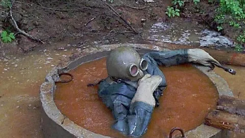

Недавно упоминал, что в процессе собеседований бывает трудно определить уровень кандидата в случае противоречивых сигналов. Например, олимпиадник задачки нарешал на сеньора, но опыта 0, не брать же его на сеньора. А разработчик-техлид с 20-летним стажем, наоборот, быстро щелкать задачки разучился, и прошел секцию на мидла, хотя реального опыта и навыков у него огого (впрочем, придумывать алгоримты все равно уметь должен - писал про это ранее). И если второй кейс неплохо покрывает архитектурная секция, то для первого у нас не так давно появился такой тип интервью как Technical Deep-Dive, который я также недавно стал проводить.
По сути это разговор, который строится вокруг одного из проектов в анамнезе кандидата, и он должен помочь отличить теоретические изыскания от реального опыта. Кандидат вправе выбрать любой проект из своего недавнего прошлого (не более 3 лет назад, чтобы еще достаточно хорошо его помнить). Проект должен быть достаточно масштабным (3-6 месяцев работы). Роль кандидата на проекте должна быть значимая (важно, чтобы К принимал там решения). И чтобы на этом проекте кандидат проявил какие-то важные качества в области архитектуры, проектирования, командной работы, работы с продуктом и сроками.
Мне, как интервьюверу, больше всего интересно, что именно в проекте человек сделал сам. Какие решения принимал, почему выбрал ту или иную технологию, как продумывал внедрение, за какими метриками следил. Откуда задача пришла и в какой постановке, какой был контекст. Что удалось предусмотреть заранее в вопросах дюрабилити и обзервабилити. А что потом пришлось переделывать.
В процессе разговора мы углубляемся в те или иные детали, обсуждаем плюсы и минусы технологий, архитектурных паттернов. И если кандидат, действительно, проявил на этом проекте недюжинные навыки и действовал грамотно - это дорогого стоит. А если на деле он там "рядом постоял", а решения принимались с мотивировочной частью в духе "так исторически сложилось" - это сразу заметно.
Еще несколько лет назад при собеседовании в Яндекс опыт почти не играл роли - больший вес имели кодовые секции. Новый подход с TDD призван это изменить, и я верю, что уже скоро эта секция будет зачастую играть решающую роль в найме сильных и опытных ребят. Проводят ее те, кто может реально оценить ее, регламент зарегулирован, оценивание прозрачно. Так что если вы - сильный и опытный разработчик, но боитесь посыпаться на алгосах и получить лишь оффер джуна - считайте, что это знак все же попробовать пройти секции. Вакансии тут
